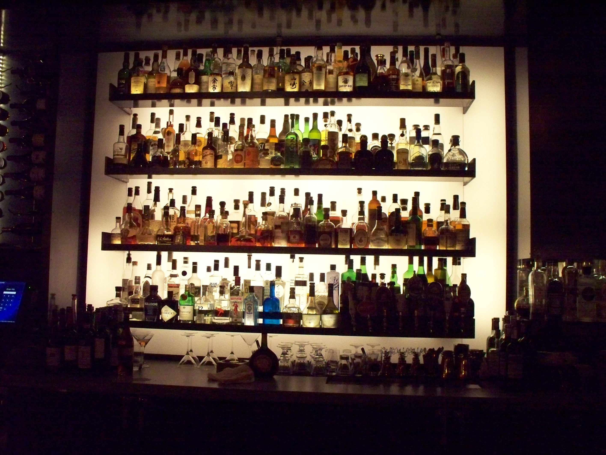

<ion-side-menus enable-menu-with-back-views="false">
  <ion-side-menu-content>
    <ion-nav-view name="menuContent"></ion-nav-view>
  </ion-side-menu-content>

  <ion-side-menu class='nav-menu' side="left" expose-aside-when="large">
    <ion-content>
      <ion-list class="list">
        <ion-item id='bar-pic' nav-clear>
          
        </ion-item>
        <ion-item nav-clear ui-sref="app.main.orders" ui-sref-active="act">
          <i class="icon ion-card"></i>
          <span>Orders</span>
        </ion-item>
        <ion-item nav-clear ui-sref="app.main.drinkMenu" ui-sref-active="act">
          <i class="icon ion-beer"></i>
          <span>Menu</span>
        </ion-item>
        <ion-item nav-clear ui-sref="app.main.settings" ui-sref-active="act" ng-class="{alert: !app.user.completedSignup }">
          <i class="icon ion-gear-a"></i>
          <span>Settings</span>
        </ion-item>

        <ion-item nav-clear ng-click='main.signout()'>
          <i class="icon ion-fireball"></i>
          <span>Sign Out</span>
        </ion-item>

      </ion-list>
    </ion-content>
  </ion-side-menu>
</ion-side-menus>
